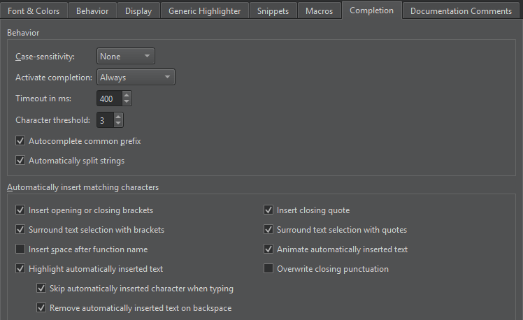

Completion
To set preferences for code completion, select Preferences > Text Editor > Completion.

Code Completion Behavior
By default, code completion does not consider case. To apply full or first-letter case-sensitivity, select Full or First Letter in the Case-sensitivity field.
By default, code completion is always invoked, but you can change this behavior in the Activate completion field to invoke it Manually or When Triggered.
You can set a timeout in milliseconds for code completion in the Timeout in ms field.
In the Character threshold field, specify the number of characters you need to enter before code completion is triggered.
When completion is invoked manually, Qt Creator completes the common prefix of the list of suggestions. This is especially useful for classes with several similarly named members. To disable this functionality, deselect the Autocomplete common prefix check box.
Select the Automatically split strings check box to split a string to two lines by adding an end quote at the cursor position when you press Enter and a start quote at the beginning of the next line, before the rest of the string. In addition, pressing Shift+Enter inserts an escape character at the cursor position and moves the rest of the string to the next line.
Automatically Inserting Matching Characters
When you have selected code and enter brackets or quotes, the matching closing character is added automatically at the end of the selection.
By default, the automatically inserted text is highlighted and animated, skipped when you type, and removed when you press Backspace.
See also Complete CMake code, Enclose code in brackets or quotes, Nim, Complete code, and Snippets.